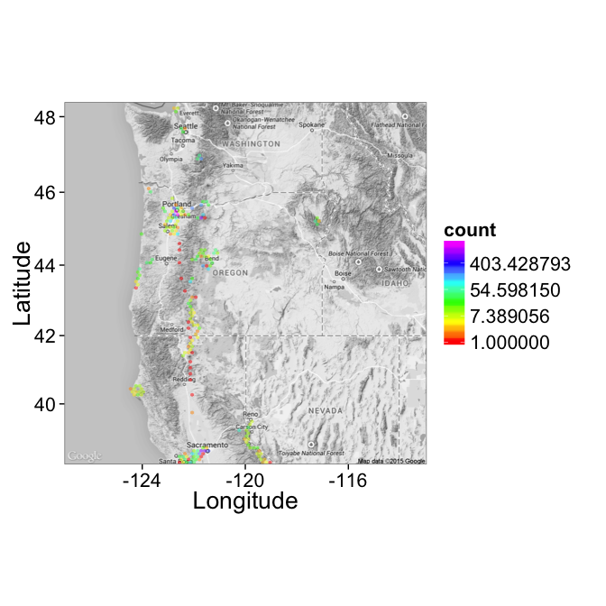
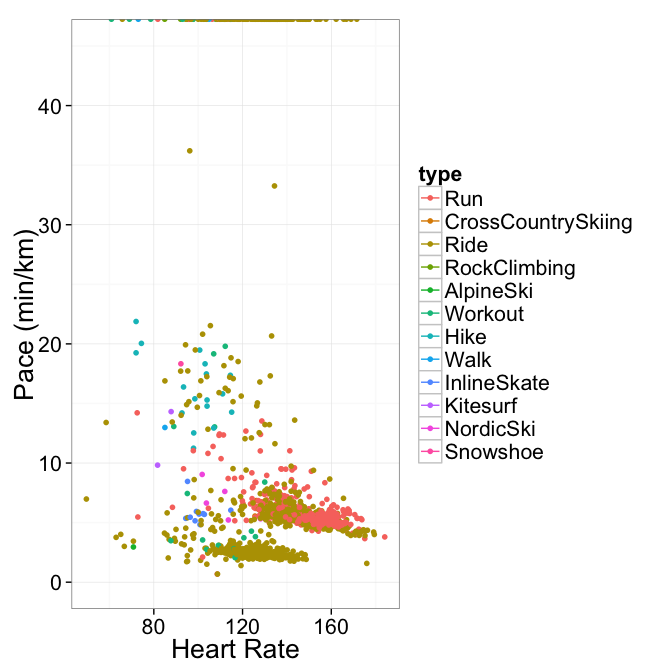

First a few libraries need to be loaded for processing the data and making some simple plots on top of maps
used.libraries<-c("knitcitations","ggplot2","plyr","knitr","rmarkdown","httr","maptools","maps","rjson","stringr","RCurl")
for(clib in used.libraries) {
library(clib,character.only=T)
citep(citation(clib))
}
opts_chunk$set(results='hide',
warning=F,fig.align='center',echo=T,
fig.height=7,message=F,cache=T)Now using the Strava API combined with the Rtrava code provided by https://github.com/ptdrow/Rtrava we can authenticate using a personal code generated on the http://strava.github.io/api/ page.
source("Rtrava.R")
# For the first time to create the token run the following
# source("login.R") # defines everything for strava_oath function
# stoken<-config(token=strava_oauth(strava.appname,strava.clientid,strava.secret))
# save.image("token.RData")
load("token.RData");
# reload the important functions
source("Rtrava.R")
usage_left <- as.integer(c(600, 30000))Now all the activities can be read in for a given Strava user (in this case, me)
my.strava.id<-"845403"
my.acts<-get_activity_list(stoken,id=my.strava.id)We now demonstrate that the data has been read in reasonably correctly by plotting the last activity as a line
first.polyline<-DecodeLineR(my.acts[[1]]$map$summary_polyline)
ggplot(first.polyline,aes(y=lat,x=lng))+
geom_point()+
geom_path()+
labs(y="Latitude",x="Longitude")+
theme_bw(20)The next code parses the GPS data from the polyline for every activity that has the information. It also tries to read in other information like distance, heart-rate, etc and places an NA if it isn’t present.
try.or.na<-function(block) {
out.val<-tryCatch(block,error=function(e) {NA})
if(is.null(out.val)) NA
else out.val
}
sum.fun<-function(cur.act) {
data.frame(id=try.or.na({cur.act$id}),
date=try.or.na({cur.act$start_date_local}),
type=try.or.na({cur.act$type}),
workout_type=try.or.na({cur.act$workout_type}),
avg_speed=try.or.na({cur.act$average_speed}),
avg_hr=try.or.na({cur.act$average_heartrate}),
dist=try.or.na({cur.act$distance}),
elevation=try.or.na({cur.act$total_elevation_gain}),
moving_time=try.or.na({cur.act$moving_time})
)
}
summary.data<-ldply(my.acts,sum.fun)
pl.data<-ldply(my.acts,function(cur.act) {
sum.data<-sum.fun(cur.act)
# append position information
tryCatch(
{
map.df<-DecodeLineR(cur.act$map$summary_polyline)
cbind(sum.data,map.df)
},
error = function(e) {
cbind(sum.data,lat=NA,lng=NA)
})
})Here is a simple contour plot of all the data that has been read in
ggplot(pl.data,aes(x=lng,y=lat))+
stat_binhex(color=NA,bins=100)+
geom_density2d()+
coord_equal()+
labs(y="Latitude",x="Longitude")+
theme_bw(20)Now show a basic density plot on top of some map information for around Switzerland
villigenMap<-get_map(location=c(lon=8.22190,lat=47.53733),color="bw",scale=2)
ggmap(villigenMap)+
stat_binhex(data=pl.data,aes(x=lng,y=lat),alpha=0.5,bins=200)+
scale_fill_gradientn(colours=rainbow(6),trans = "log")+
labs(y="Latitude",x="Longitude")+
theme_bw(20)Now of the US
usaMap<-get_map(location=c(lon=-97.22190,lat=42),zoom=4,scale=2,color="bw")
ggmap(usaMap)+
stat_binhex(data=pl.data,aes(x=lng,y=lat),alpha=0.5,bins=100)+
scale_fill_gradientn(colours=rainbow(6),trans = "log")+
labs(y="Latitude",x="Longitude")+
theme_bw(20)Examining just the west coast in more detail
usaMap<-get_map(location=c(lon=-120,lat=43.5),zoom=6,scale=2,color="bw")
ggmap(usaMap)+
stat_binhex(data=pl.data,aes(x=lng,y=lat),alpha=0.5,bins=100)+
scale_fill_gradientn(colours=rainbow(6),trans = "log")+
labs(y="Latitude",x="Longitude")+
theme_bw(20)
Now for all of Europe
euMap<-get_map(location=c(lon=12.22190,lat=45),zoom=4,color="bw")
ggmap(euMap)+
stat_binhex(data=pl.data,aes(x=lng,y=lat),alpha=0.75,bins=100)+
scale_fill_gradientn(colours=rainbow(6),trans = "log")+
labs(y="Latitude",x="Longitude")+
theme_bw(20)Here I try to make some basic analysis for various sports looking at heart rate, duration and speed.
good.sport.data<-subset(summary.data,!is.na(avg_hr) & avg_speed<80)
good.sport.data$year<-as.numeric(substr(as.character(good.sport.data$date),0,4))
good.sport.data$month<-as.numeric(substr(as.character(good.sport.data$date),6,7))
good.sport.data$kmph<-with(good.sport.data,dist/1000/(moving_time/3600))
good.sport.data$minperkm<-with(good.sport.data,(moving_time/60)/(dist/1000))
ggplot(good.sport.data,aes(x=moving_time/60,y=dist/1000))+
geom_point(aes(color=avg_hr))+
geom_smooth()+
scale_color_gradientn(colours=rainbow(6))+
labs(x="Time (min)",y="Distance (km)")+
facet_wrap(~type,scales="free")+
theme_bw(10)total.beats<-ddply(good.sport.data,.(type,year,month),
function(x) data.frame(tot.beats=sum(x$avg_hr*x$moving_time)))
ggplot(total.beats,aes(x=(month),y=tot.beats))+
geom_line(aes(color=type,group=type))+
labs(x="Month",y="Total Heart Beats")+
facet_wrap(~year,scales="free_x")+
theme_bw(10)ggplot(good.sport.data,aes(x=avg_hr,y=minperkm,color=type))+
geom_point()+
geom_density2d()+
#scale_color_gradientn(colours=rainbow(6))+
labs(y="Pace (min/km)",x="Heart Rate")+
#facet_wrap(~type,scales="free")+
ylim(0,45)+
theme_bw(20)
ggplot(good.sport.data,aes(x=moving_time/60,y=avg_hr))+
geom_point(aes(color=type))+
#scale_color_gradientn(colours=rainbow(6))+
labs(x="Time",y="Heart Rate")+
scale_x_sqrt()+
facet_wrap(~type,scales="free")+
theme_bw(10)run.data<-subset(good.sport.data,!is.na(avg_hr) & type=="Run" & minperkm>3 & minperkm<30)
ggplot(run.data,aes(x=moving_time/60,y=avg_hr))+
geom_point(aes(color=minperkm))+
scale_color_gradientn(colours=rainbow(6))+
labs(x="Time (minutes)",y="Heart Rate",color="Pace\nMin/km")+
scale_x_sqrt()+
theme_bw(20)ggplot(run.data,aes(x=minperkm,y=avg_hr))+
geom_point(aes(color=moving_time/60))+
scale_color_gradientn(colours=rainbow(6))+
labs(x="Pace (Min/km)",y="Heart Rate",color="Time\n(min)")+
theme_bw(20)ggplot(run.data,aes(x=minperkm,y=avg_hr))+
geom_point(aes(color=dist/1000))+
scale_color_gradientn(colours=rainbow(6))+
labs(x="Speed",y="Heart Rate",color="Distance\nkm")+
facet_wrap(~year)+
ylim(100,180)+
theme_bw(20)ggplot(run.data,aes(x=minperkm,y=avg_hr,color=as.factor(year)))+
geom_density2d(aes(weight=moving_time))+
labs(x="Pace (min/km)",y="Heart Rate")+
ylim(100,180)+
#xlim(1,20)+
facet_wrap(~year)+
labs(color="Year")+
theme_bw(20)ggplot(run.data,aes(x=as.factor(year),y=minperkm,fill=as.factor(year)))+
geom_violin()+
labs(y="Pace (min/km)",x="Year")+
labs(fill="Year")+
theme_bw(20)cycling.data<-subset(good.sport.data,!is.na(avg_hr) & type=="Ride" & kmph>5 & kmph<60)
ggplot(cycling.data,aes(x=as.factor(year),y=kmph,fill=as.factor(year)))+
geom_violin()+
labs(y="Speed",x="Year")+
#ylim(1,5)+
labs(fill="Year")+
theme_bw(20)ggplot(cycling.data,aes(x=kmph,y=avg_hr))+
geom_point(aes(color=elevation))+
geom_density2d(alpha=0.5)+
labs(x="Pace (min/km)",y="Heart Rate")+
scale_color_gradientn(colours=rainbow(6))+
ylim(100,180)+
#xlim(1,20)+
facet_wrap(~year)+
theme_bw(20)Are more detailed maps dividing activities by sport and year to see if any interesting results come out. ## Europe
plr.data<-ddply(subset(pl.data,!is.na(lat) && !is.na(lng) && type!="Workout"),.(type),
function(x) cbind(x,type.count=nrow(x)))
euMap<-get_map(location=c(lon=12.22190,lat=45),zoom=4,color="bw")
ggmap(euMap)+
stat_binhex(data=subset(plr.data,type.count>1000),aes(x=lng,y=lat),alpha=0.75,bins=50)+
scale_fill_gradientn(colours=rainbow(6),trans = "log")+
facet_wrap(~type)+
labs(y="Latitude",x="Longitude")+
theme_bw(20)Examining my amount of travel each year
pl.data$year<-as.numeric(substr(as.character(pl.data$date),0,4))
euMap<-get_map(location=c(lon=12.22190,lat=45),zoom=2,color="bw")
ggmap(euMap)+
stat_binhex(data=pl.data,aes(x=lng,y=lat),alpha=0.75,bins=50)+
scale_fill_gradientn(colours=rainbow(6),trans = "log")+
facet_wrap(~year)+
labs(y="Latitude",x="Longitude")+
theme_bw(20)bibliography()[1] J. Allaire, J. Cheng, Y. Xie, et al. rmarkdown: Dynamic Documents for R. R package version 0.5.1. 2015.
[2] O. S. c. b. R. A. Becker and A. R. W. R. v. b. R. B. E. b. T. P. M. tpminka@media.mit.edu. maps: Draw Geographical Maps. R package version 2.3-9. 2014.
[3] R. Bivand and N. Lewin-Koh. maptools: Tools for Reading and Handling Spatial Objects. R package version 0.8-34. 2015.
[4] C. Boettiger. knitcitations: Citations for knitr markdown files. R package version 1.0.5. 2014.
[5] A. Couture-Beil. rjson: JSON for R. R package version 0.2.14. 2014.
[6] D. Temple Lang. RCurl: General network (HTTP/FTP/…) client interface for R. R package version 1.95-4.5. 2014.
[7] H. Wickham. ggplot2: elegant graphics for data analysis. Springer New York, 2009. ISBN: 978-0-387-98140-6.
[8] H. Wickham. httr: Tools for working with URLs and HTTP. R package version 0.5. 2014.
[9] H. Wickham. stringr: Make it easier to work with strings. R package version 0.6.2. 2012.
[10] H. Wickham. “The Split-Apply-Combine Strategy for Data Analysis”. In: Journal of Statistical Software 40.1 (2011), pp. 1-29.
[11] Y. Xie. Dynamic Documents with R and knitr. ISBN 978-1482203530. Boca Raton, Florida: Chapman and Hall/CRC, 2013.
[12] Y. Xie. “knitr: A Comprehensive Tool for Reproducible Research in R”. In: Implementing Reproducible Computational Research. Ed. by V. Stodden, F. Leisch and R. D. Peng. ISBN 978-1466561595. Chapman and Hall/CRC, 2014.
[13] Y. Xie. knitr: A General-Purpose Package for Dynamic Report Generation in R. R package version 1.8. 2014.